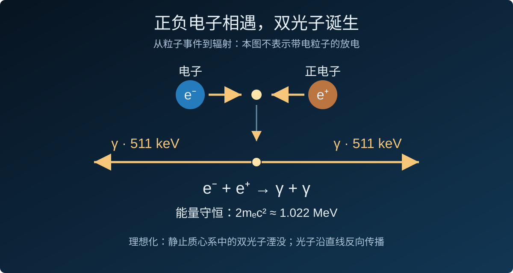
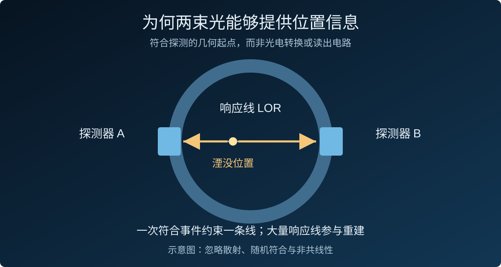

一切，从湮灭之光开始
反物质的预言与发现
一个方程的幽灵：狄拉克与反物质
1928年，狄拉克试图把量子力学与狭义相对论统一起来，写下了描述电子的狄拉克方程。这个方程意外地给出两类解：一类对应真实存在的电子，另一类却对应能量为负的"幽灵"态。在经典物理里，负能态意味着不稳定，理应导致电子不断坠向更低的能量，整个原子世界都会崩塌。
狄拉克给出的解释大胆而奇特：真空并非空无一物，而是一片被负能态电子填满的"海"。海中的空穴，表现为一种与电子质量相同、电荷相反的粒子。当时没有任何实验见过这种粒子，它纯粹是方程逼出来的结论。1931年，狄拉克把它称为"反电子"。一个纯理论的预言，就这样被摆在实验物理学家面前。
云室里的一条径迹：安德森发现正电子
1932年，美国物理学家安德森在研究宇宙线时，用云室拍到一条带正电粒子的径迹。通过分析磁场中的弯曲、穿过铅板前后的能量损失及径迹特征，他排除了普通电子和质子的解释，确认这是一种质量接近电子、电荷为正的粒子，并将其命名为“正电子”。
更值得注意的是，安德森当时并不了解狄拉克的预言。理论家在方程中推演出的幽灵粒子，实验家在云室照片里独立撞见了它，两条线索在同一颗粒子上汇合。1936年，年仅31岁的安德森因发现正电子获诺贝尔物理学奖。
成对产生与湮没辐射：证据继续汇合
1933年，布莱克特与奥基亚利尼的云室研究为正负电子成对产生提供了重要证据。同一时期，对正电子湮没辐射的研究进一步把反粒子的存在、产生与消失联系起来。粒子径迹和辐射测量，从不同方向检验着同一幅物理图景。
反物质的发现由此形成了一条清晰的科学路径：理论预言提出对象，实验识别粒子，后续研究追踪相互作用。正电子与电子湮没时能够释放辐射，正是这条路径后来与PET成像相连的物理基础。
从“看见径迹”到“确认粒子”
云室照片并不直接显示一个写着“正电子”的对象。带电粒子使沿途气体电离，凝结的液滴才留下可见径迹；磁场中的弯曲方向提供电荷符号的线索。安德森在云室中放入铅板，利用粒子穿板后损失能量、曲率增大的变化判断运动方向，再结合径迹特征排除质子的解释。一张照片的意义，来自几种测量证据之间的相互约束。
理论与实验在这里承担不同任务：方程提出一种可能存在的粒子，测量则检验质量、电荷与运动特征是否符合预言。正电子的发现使反物质从数学结构走向可重复研究的对象，也建立了理解湮没辐射的粒子身份。狄拉克的“海”属于这一发现的历史解释，现代量子场论以粒子与反粒子的场描述这些过程。
湮没：从粒子到辐射
511 keV 从何而来
电子与正电子的静止质量相同、电荷相反。在PET常见的低能双光子湮没过程中，二者的静止质量能对应约1.022 MeV；在静止质心系的理想情形下，这份能量由两个光子平分，每个约511 keV。这个数值是电子静止质量能的标记，并不是一切粒子湮没都会发出同样的光。
为什么是两束反向的直线
能量守恒决定总能量，动量守恒约束传播方向。在初始总动量为零的双光子情形下，两束光必须具有大小相等、方向相反的动量。光子不带电，在均匀介质中沿直线传播；这里的光不是电荷放电，也不沿弯曲的电火花路径运动。真实组织中的粒子运动会带来轻微非共线性，因此“严格180°”是理想化，而不是每一次测量的绝对条件。

守恒定律如何限定一次事件
质能关系E = mc²给出了静止质量对应的能量，光子的关系E = pc则把能量与动量连接起来。对于初始总动量为零的自由正负电子对，单个光子无法同时满足能量与动量守恒：它带走非零能量，也必然带走非零动量。双光子沿相反方向传播，才可以在保持总能量的同时让动量相互抵消。
“两个511 keV光子”描述的是PET所利用的主要低能双光子通道。粒子的初始运动、电子的束缚状态及其他湮没通道，会使完整的微观过程更丰富。因此在物理图像中，需要同时说明能量尺度、参考系和适用条件。示意图中的两条直线表达符合成像的基本几何，并不列举所有可能的湮没过程。
成对产生：能量可以重新成为粒子
成对产生展示了另一个方向：高能光子在原子核附近，可以转化为电子与正电子，原子核承担反冲动量。在这种核场成对产生中，光子需要至少约1.022 MeV的能量来提供两者的静止质量，实际还要满足反冲等运动学条件。一个孤立光子在真空中不能直接变成一对自由正负电子，因为同样必须满足动量守恒。
产生与湮没共同说明，粒子数可以变化，而能量、动量和电荷等守恒量仍需严格平衡。把这一过程理解为受物理定律约束的转化，才能进一步追问：哪些量能够被探测，哪些信息可以用于定位，哪些细节会在测量中表现为展宽或不确定性。
光子如何离开湮没点
示踪剂中的富质子核素经β⁺衰变产生正电子。正电子先在组织中损失动能，再与电子湮没；因此核衰变的位置与湮没位置之间有一段距离。这个正电子射程随核素与介质而变化，是PET空间分辨率的物理限制之一。
两束伽马光子离开湮没点后，可能穿过组织到达探测器，也可能发生散射或被吸收。PET需要识别的是可用于定位的事件，而不是所有出射光。衰减、散射、有限探测效率与随机符合，使从一次粒子事件到可靠测量之间始终存在统计与校正问题。
衰变位置、湮没位置与示踪分布
以PET常用的氟-18为例，放射性核素通过衰变提供正电子，标记分子的分布则决定哪些区域更可能发生这些衰变。PET通过许多事件推断示踪剂的空间分布。图像中的亮度，需要结合示踪剂种类、采集条件和重建方式理解；它所表达的生物学意义，还取决于标记分子参与的过程。
正电子沿途与介质相互作用，其运动方向会改变，能量逐步降低。不同核素具有不同的正电子能谱，不同介质也具有不同的阻止能力，所以射程是一种分布。即使探测位置测得非常精确，响应线约束的仍首先是湮没位置；从这里回到最初的核衰变位置，还存在这一物理距离。
传播中的相互作用，会改变可用信息
伽马光子穿过组织时，康普顿散射可以使它改变方向并向电子转移部分能量；光电吸收则可以终止这一光子的传播。如果散射光子随后被探测，连接两个探测位置得到的直线可能偏离真实湮没点。如果其中一个光子未能到达或被记录，这次事件也无法形成所需的双光子符合。
这使探测选择成为物理测量的一部分。能量筛选可帮助排除部分散射事件，衰减校正则处理不同传播路径的光子损失。它们都需要概率模型与测量数据的支持：严格筛选可能减少背景，也会舍弃一部分计数；保留更多计数，则要进一步评估误接受事件对图像的影响。
从双光子到位置信息
符合探测：一对光子约束一条响应线
如果两个探测单元在规定的时间窗内记录到事件，系统可以把它们作为一个候选符合事件。对于未发生散射的真实符合，连接两个探测位置的响应线（LOR）约束了湮没点所在的空间路径。一次符合通常不能给出唯一的三维点；需要大量响应线、系统几何与校正模型共同参与重建。

飞行时间：进一步缩小不确定范围
两个光子的到达时间差提供沿响应线的额外信息：理想关系为Δx = cΔt / 2。有限时间分辨率使它成为一个有宽度的位置约束，而不是无误差的定位。物理给出了信息可以来自哪里，也同时给出了测量能够达到的边界。
真实、散射与随机符合，为什么必须区分
时间接近并不足以证明两个记录来自同一次湮没。真实符合来自同一事件且满足可用的传播条件；散射符合包含方向已改变的光子；随机符合则把不同湮没事件的两个记录偶然配成一对。后两者会把计数分配到不合适的空间路径，影响背景、对比度和定量结果。
时间窗越宽，接受时差较大的记录越容易，但偶然配对的机会也会增加。时间窗收窄又受到系统时间分辨率的限制。因此符合条件是一项需要标定的测量选择。对随机与散射成分的估计，以及对探测效率和衰减的校正，共同决定数据能否支持可靠的空间解释。
从时间差理解长度尺度
Δx = cΔt / 2中的二分之一，来自两条路径同时变化：湮没点沿响应线向一侧移动一段距离，一个光子的路程缩短，另一个光子的路程增加，两者的路程差变化两倍。若以c ≈ 3 × 10⁸ m/s计算，100 ps的时间差对应约15 mm的位置偏移。这是关系式的尺度示例，未指代本实验室仪器的性能。
同样的换算可以用于理解时间测量的不确定度。更好的符合时间分辨率，可使沿响应线的位置约束更集中，但图像空间分辨率还受到正电子射程、非共线性、探测单元尺寸与重建模型等因素影响。时间分辨率、空间分辨率和探测灵敏度回答的是不同问题，评价系统时需要分别说明。
许多不完整的事件，如何共同支持一幅图像
一个事件只提供有限信息，许多事件却可以构成相互约束的观测集合。重建利用每条响应线的几何、事件统计和系统响应，估计最能解释这些记录的空间分布。有限计数带来统计波动，模型失配会带来系统偏差；图像的清晰程度因此同时依赖数据质量与物理模型。
理解这一点，有助于阅读PET图像：图像是一种根据测量推断得到的分布，每个体素都有其采样和模型背景。高能光子为穿透与定位提供条件，守恒定律为几何提供依据，统计分析则把众多微观事件转化为能够比较与检验的结果。
物理的起点，探测的下一程
湮没之光把反物质的基础研究与生命成像连接起来。本篇的终点，是理解光子的来源及其所携带的几何信息；怎样捕获这些光、怎样让微光在硅中形成电脉冲，则是下一篇专题的问题。